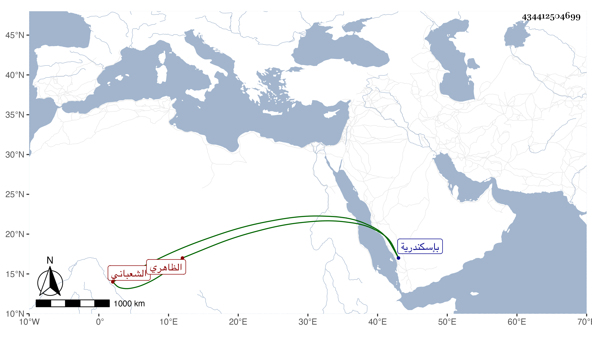

0902Sakhawi.DawLamic.ITO20230111-ara1.EIS1600.434412504699
Biography ID: 434412504699
702
قجق بضمتين الشعباني الظاهري برقوق . ترقى في الأيام الناصرية حتى صار مقدما ثم عصى عليه وتوجه لشيخ ونوروز فلما تسلطن شيخ قدمه أيضا ثم ولاه الحجوبية الكبرى ثم قبض عليه وحبسه بإسكندرية وبعده أطلقه ططر وأعطاه تقدمة ثم إمرة مجلس ثم في أيام الأشرف صار أمير سلاح ثم في سنة سبع وعشرين أتابكا ، واستمر حتى مات في تاسع رمضان سنة تسع وعشرين ونزل السلطان فصلى عليه تقدم العيني الناس ثم دفن بحوش السلطان عند تربة برقوق من الصحراء واستقر عوضه في الأتابكية يشبك الساقي الأعرج ، وكان أميرا جليلا وافر الحرمة معظما في الدول رأسا في ركوب الخيل وفنون الفروسية مع حسن الشكالة والشيبة والعقل والسكون والتواضع والحلم والخوف على دينه . أثنى عليه العيني وغيره رحمه الله .
